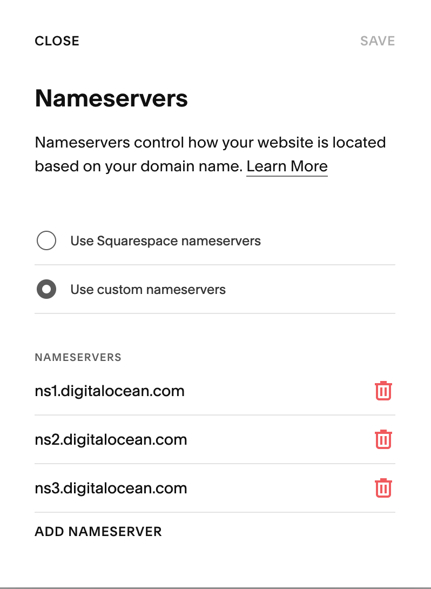

idea is to return this markdown as html to the browser when it's requested. I could cache this ahead of time but I really don't need to do that. I think it's cool to adopt the "return html to the client" paradigm
h5 Heading
h6 Heading
Horizontal Rules
Typographic replacements
Enable typographer option to see result.
(c) (C) (r) (R) (tm) (TM) (p) (P) +-
test.. test... test..... test?..... test!....
!!!!!! ???? ,, -- ---
"Smartypants, double quotes" and 'single quotes'
Emphasis
This is bold text
This is bold text
This is italic text
This is italic text
- Register square space domain with digital ocean servers 